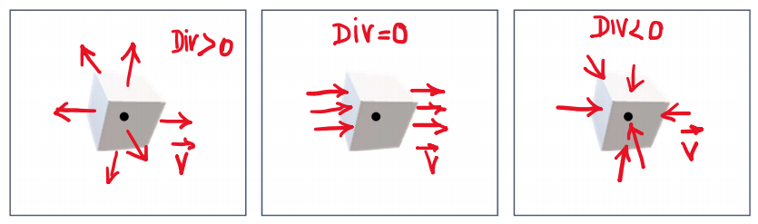

Divergente de um Campo Vetorial
Divergente de um campo vetorial
O divergente em um ponto é o limite da divisão entre o fluxo em uma superfície fechada pequena, que envolve esse ponto, e o volume dessa superfície:
\(Divergente = \lim_{V \to 0} \frac{\phi_{V}}{V}\)

Pra calcular o divergente de um campo vetorial, você faz as derivadas parciais em x (em \(\hat{i}\)), em y (em \(\hat{j}\)), e em z (em \(\hat{k}\)).
Exemplo:
\(\vec{E} = (3x-8y)\hat{i} + (y^2)\hat{j} + (-3xz + 5z^2)\hat{k}\)
\(\frac{\partial Ex}{\partial x} = 3, \frac{\partial Ey}{\partial y} = 2y, \frac{\partial Ez}{\partial z} = -3x + 10z\)
\(\vec{\nabla}\cdot\vec{E} = -3x + 2y + 10z + 3\)
Densidade volumétrica de carga
É a quantidade de carga por unidade de volume:
$\frac{Q}{v} = $ Densidade volumétrica de carga = \(\rho\)
\(\vec{\nabla}\cdot\vec{E} = \frac{\rho}{\varepsilon_{0}}\)
\(\vec{\nabla}\cdot\vec{B} = 0\)
Não há carga elétrica no espaço em torno de uma carga Q:
\(\vec{\nabla}\cdot\vec{E} = 0\)